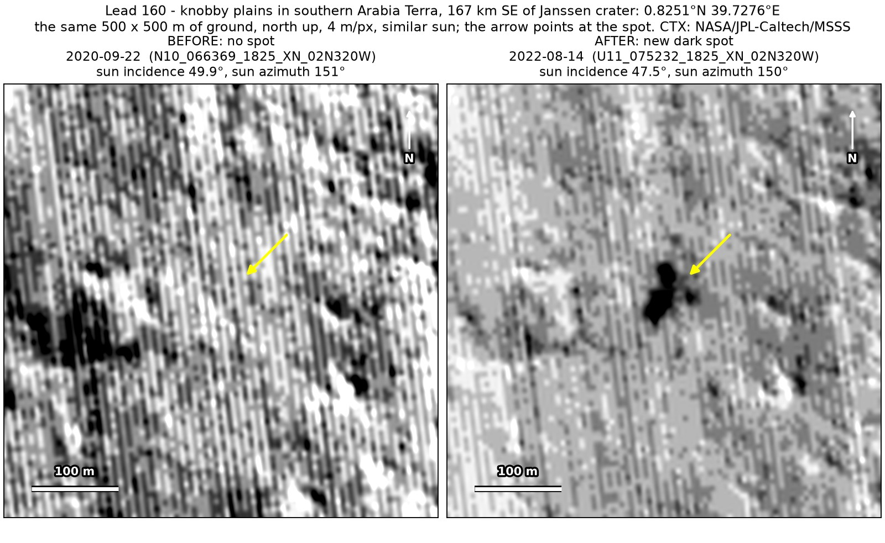
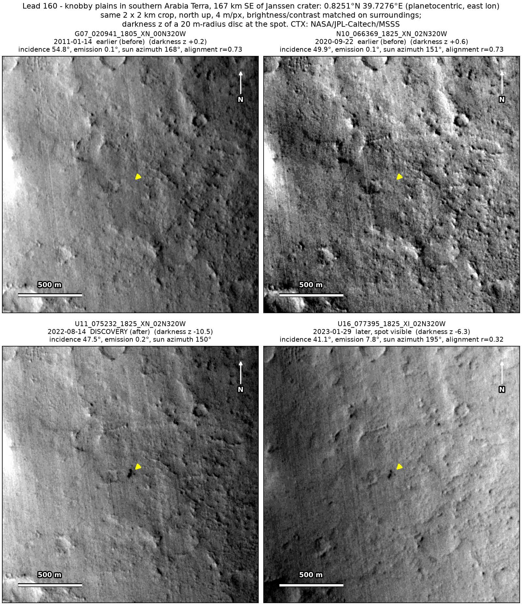
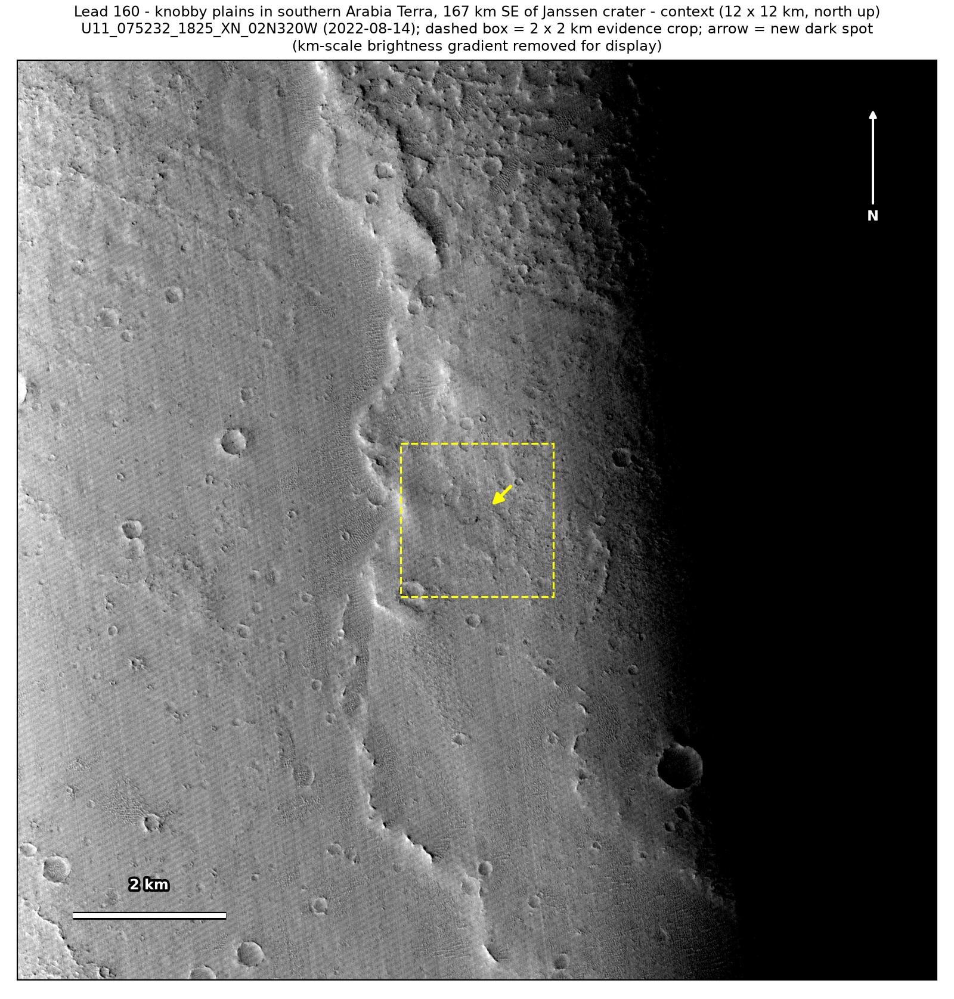

Professor of Mathematics
Paata Ivanisvili
Department of Mathematics, University of California, Irvine

← Possible new impact sites on Mars
Candidate 160: Knobby plains in southern Arabia Terra, 167 km south-east of Janssen crater
Strong · roughly 75%

What changed. A compact dark spot about 50 m across, in two lobes, appeared on knobby plains in southern Arabia Terra, 167 km south-east of Janssen crater, between September 2020 and August 2022, in two CTX images from two orbits five and a half months apart.
Why it may be a new impact. Two earlier images from 2011 and 2020 show only the knobby texture there, the 2020 one under almost the same sun as the first image with the spot, while a dark feature 300 m away shows in it, and a compact dark spot appearing on dusty plains and lasting is how the blast zone of a small new crater looks.
- Location
- 0.825° N, 39.728° E
- Absent
- 14 January 2011 and 22 September 2020
- Present
- 14 August 2022 and 29 January 2023
- Size
- Dark spot about 50 m across (34 × 66 m in the August 2022 image), in two lobes
- Confidence
- Strong candidate; roughly 75% that it is a new impact.
- Caveat
- Only two images show it, the second poorly aligned and taken at an angle; comparing all four images picks out a slope 960 m away, whose shading changes with the sun, a little more strongly than the spot; and its window is 23 months long: an image taken 17 days before the first one with the spot could not be aligned, so it is not used. It lies outside every footprint of the high-resolution HiRISE camera; the nearest ends 53.0 km away. Like every candidate here, it is unconfirmed: see the caveat.

